2015_03311.jpg
Largest Zero-DCE++ per-image F1 gain
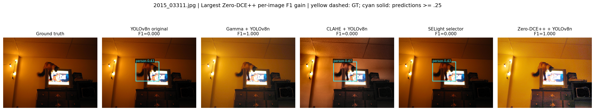
SELight investigates one inexpensive input transform before a frozen YOLOv8n detector. This showcase links every measured claim to matching images, raw predictions, timing scope and source provenance.
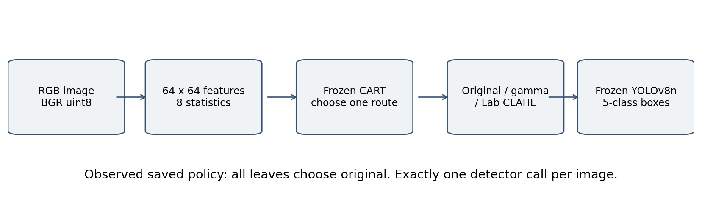
Five-class ExDark validation subset, frozen checkpoint, FP32, imgsz 640. All methods see identical image IDs and annotations. Accuracy uses repeat 0; repeats are cost measurements, not independent accuracy samples.
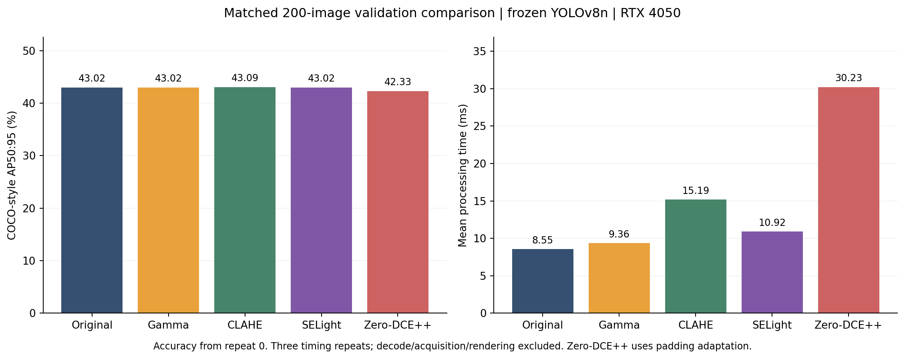
| Method | AP50:95 % | AP50 % | Micro F1 | Mean-image F1 | Mean ms | P95 ms |
| Original | 43.019 | 71.987 | 0.6699 | 0.7493 | 8.55 | 10.98 |
| Gamma | 43.016 | 71.184 | 0.6691 | 0.7628 | 9.36 | 14.78 |
| CLAHE | 43.093 | 71.531 | 0.6854 | 0.7838 | 15.19 | 45.21 |
| SELight | 43.019 | 71.987 | 0.6699 | 0.7493 | 10.92 | 21.90 |
| Zero-DCE++ (adapt.) | 42.328 | 71.988 | 0.6608 | 0.7683 | 30.23 | 140.57 |
Processing timing includes selection/enhancement, transfers, output quantization and synchronized detection. Decode, startup, acquisition, drawing and writing are excluded. Zero-DCE++ uses a geometry-preserving padding adaptation.
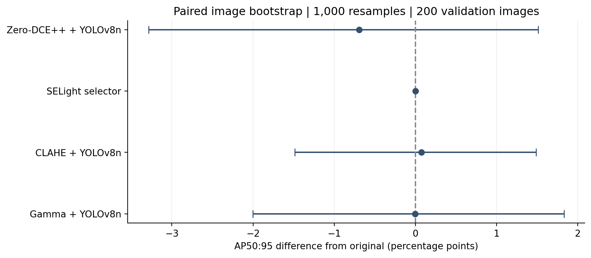
| Candidate | AP delta (pp) | AP 95% interval (pp) | F1 delta |
| Gamma | -0.003 | [-2.004, +1.830] | +0.0135 |
| CLAHE | +0.074 | [-1.483, +1.488] | +0.0345 |
| SELight | +0.000 | [+0.000, +0.000] | +0.0000 |
| Zero-DCE++ (adapt.) | -0.691 | [-3.288, +1.515] | +0.0190 |
1,000 paired image resamples, dataset-level COCO AP recomputation; independent images assumed because capture-session labels are unavailable. Intervals crossing zero establish neither superiority nor equivalence. The identical selector has an analytically zero interval.
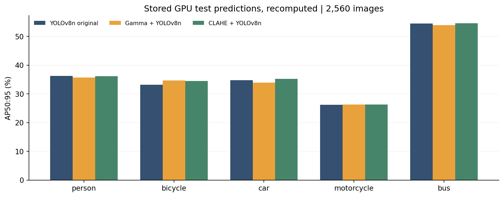
2,560 stored test images. Existing predictions, metrics recomputed now; no new test inference.
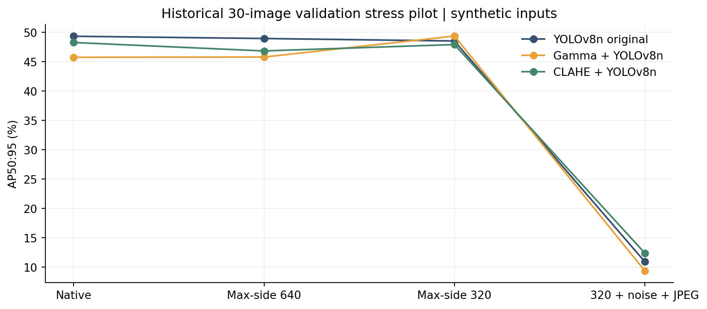
30 validation images under synthetic resize/noise/JPEG conditions. This does not establish performance on inexpensive camera sensors.
Legacy timings include decode. A roughly 69.6-minute CPU decode interruption remains in the raw selector mean. Full test, fresh validation and stress results must not be mixed into one ranking.
Yellow dashed boxes are ground truth; cyan solid boxes are predictions at confidence ≥ .25. Cases follow declared diagnostic rules rather than a success-only selection. Click a strip to inspect it at full resolution.
Largest Zero-DCE++ per-image F1 gain

Largest Zero-DCE++ per-image F1 decline
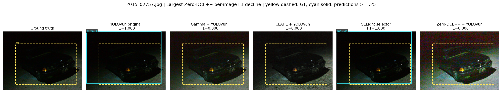
Lowest original F1 among target-positive images
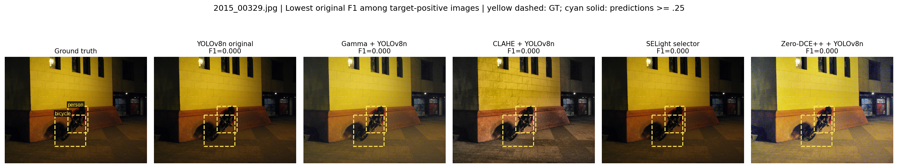
First hash-sampled example with person
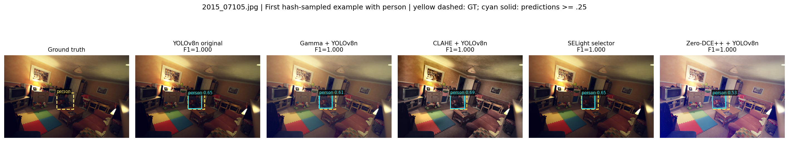
First hash-sampled example with bicycle
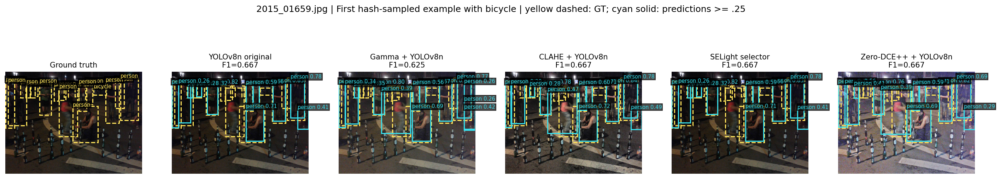
First hash-sampled example with car
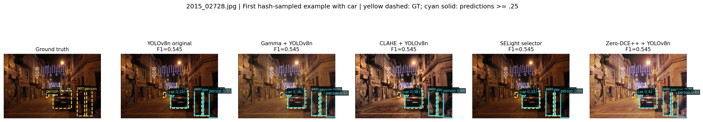
First hash-sampled example with motorcycle
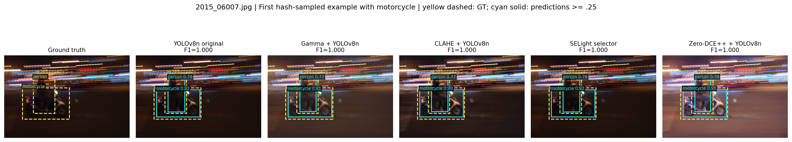
First hash-sampled example with bus
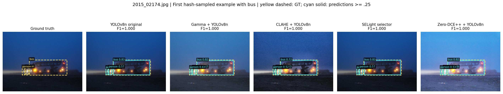
selight_project/ |-- selight/ # Production package | |-- __init__.py # Package identity | |-- __main__.py # CLI dispatcher | |-- core.py # Image features, transforms, tree routing, hashes | |-- data.py # ExDark conversion, audit and GT preview | |-- detector.py # Frozen COCO YOLOv8n adapter | |-- experiment.py # Development cache, CART training, evaluation, demo | |-- metrics.py # Class-aware F1 and pycocotools AP | `-- external.py # Official Zero-DCE++ checkpoint adapter |-- configs/ | |-- default.json # Default detector/enhancer settings | |-- cpu.json # Explicit CPU execution | `-- gpu.json # RTX 4050 / CUDA execution |-- models/ | |-- yolov8n.pt # Frozen detector; never trained here | |-- policy.json # Exported selector, search results and provenance | `-- policy.rules.txt # Human-readable tree; every leaf is original |-- infer_photo.py # Single photo, annotated PNG and prediction JSON |-- camera_benchmark.py # Frozen-policy resolution/noise/JPEG stress |-- video_benchmark.py # File-video processing time, without rendering |-- algorithm_reference.py # Readable equivalent training/inference |-- paired_comparison.py # Paired mean-image-F1 bootstrap |-- paired_ap_comparison.py # Paired dataset-level COCO AP bootstrap |-- scripts/ | |-- import_external_datasets.py # Pinned HF LLVIP byte ranges; official Penn-Fudan masks | |-- external_audit.py # Human person labels, dimensions, hashes and overlap | |-- evaluate_external.py # Frozen person-only transfer; five methods, three repeats | |-- build_external_report.py # External paired intervals, paper tables and gallery | |-- development_ablations.py # Cache-derived validation ablations | |-- visual_audit.py # Perceptual duplicate candidates and GT overlays | |-- external_pilot.py # Original versus Zero-DCE++ validation pilot | |-- fetch_zero_dcepp.py # Fetch official assets and record their hashes | |-- research_compare.py # NEW: matched five-method validation benchmark | |-- build_research_pack.py # NEW: metric checks, intervals, plots and gallery | |-- render_research_documents.py # NEW: evidence tables, standalone TeX and HTML | `-- export_research_pdf.py # NEW: verified Markdown to shareable PDF |-- tests/ | |-- test_external.py # VOC pixel edges and unannotated-class rejection | |-- test_core.py # Features, transforms, matching, parsing, training | |-- test_pipeline.py # Synthetic end-to-end pipeline with fake detector | |-- test_extensions.py # Ablation semantics and explicit deduplication | |-- test_algorithm_reference.py # Reference equivalence and single detector call | |-- test_camera_benchmark.py # Stress determinism and coordinate restoration | `-- test_ap_bootstrap.py # Resampled AP versus explicit COCO recomputation |-- third_party/zero_dcepp/ # Official architecture/checkpoint/reference script |-- research/ # New research package | |-- PAPER.md # Evidence-based manuscript | |-- paper.tex # Standalone LaTeX manuscript for native preview | |-- RESEARCH_CONTEXT.md # Complete project/research handoff | |-- CODE_MAP.md # This file | |-- CODE_REVIEW.md # Findings and unresolved limitations | |-- RUNBOOK.md # Exact run/reproduction commands | |-- showcase.html # Local visual results gallery | |-- figures/ # PNG and vector-PDF comparison figures | |-- experiments/validation_200/ # New raw predictions, timings, IDs and environment | |-- evidence.json # Verified numbers, source hashes and audit checks | |-- comparison.csv # Separate experiment scopes in machine-readable form | |-- code_inventory.json # AST-derived definitions, imports, lines and hashes | |-- gallery.json # Case IDs, selection rules and F1 values | |-- pdf_validation.json # Shareable PDF source/hash and render checks | `-- artifact_hashes.json # Research artifact integrity manifest |-- data/raw/ExDark_extracted/ExDark # Existing junction to archived images |-- data/external/ # Imported LLVIP pilot, Penn-Fudan and provenance manifests |-- outputs/ # Existing local runs; not source code |-- output/pdf/ # Shareable research manuscript PDF |-- .venv/ # Existing working environment |-- requirements*.txt # Dependency declarations |-- environment-lock.txt # Previously verified exact package set |-- setup_windows.ps1 # Fresh setup; preserves an existing .venv |-- THIRD_PARTY_NOTICES.md # External model attribution `-- README.md # Starting point ../selight_project_backup_20261002/ # Preserved data, manifests, caches and legacy results
Production files remain in their working locations. The new research package groups context, plots and reproducible comparisons without changing the frozen algorithm.
The current policy has no demonstrated quality/cost advantage. Validation was already used for policy selection. Near-duplicate/annotation-origin uncertainty remains. SCI and Retinexformer are cited related work, not locally benchmarked. Genuine labelled phone sessions, an untouched session test, Android execution and calibrated lux are not available.
The gallery uses ExDark source photographs for local academic inspection; their underlying image rights are separate from the project code. Dataset and method attribution: ExDark, YOLOv8, official Zero-DCE++. See the manuscript for full primary references.
200 LLVIP visible test images from Hugging Face; 170 official Penn-Fudan daylight images. Frozen model, person-only scoring, sequential GPU runs. Sampled LLVIP pilot; no retraining or five-class generalization claim.
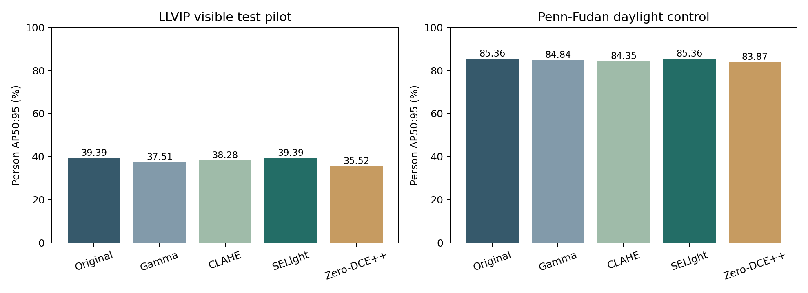
| Dataset | Images | Method | Person AP50:95 % | Person AP50 % | Micro F1 | Mean ms | P95 ms |
| LLVIP visible test pilot | 200 | Original | 39.395 | 74.638 | 0.7537 | 8.50 | 10.52 |
| LLVIP visible test pilot | 200 | Gamma | 37.512 | 70.346 | 0.7384 | 10.23 | 15.45 |
| LLVIP visible test pilot | 200 | CLAHE | 38.276 | 72.408 | 0.7375 | 17.21 | 22.25 |
| LLVIP visible test pilot | 200 | SELight | 39.395 | 74.638 | 0.7537 | 9.70 | 11.50 |
| LLVIP visible test pilot | 200 | Zero-DCE++ (adapt.) | 35.524 | 65.122 | 0.6907 | 30.19 | 35.86 |
| Penn-Fudan daylight control | 170 | Original | 85.362 | 96.844 | 0.7554 | 8.84 | 10.82 |
| Penn-Fudan daylight control | 170 | Gamma | 84.840 | 96.848 | 0.7698 | 9.14 | 11.31 |
| Penn-Fudan daylight control | 170 | CLAHE | 84.355 | 96.825 | 0.7663 | 9.95 | 14.92 |
| Penn-Fudan daylight control | 170 | SELight | 85.362 | 96.844 | 0.7554 | 9.62 | 11.84 |
| Penn-Fudan daylight control | 170 | Zero-DCE++ (adapt.) | 83.868 | 96.736 | 0.7782 | 14.66 | 20.75 |
Provenance and intervals · External results CSV
Lowest original F1; GT yellow, person predictions cyan at confidence 0.25.
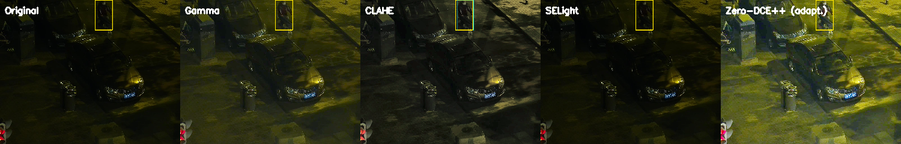
Largest Zero-DCE++ minus original F1 (may still be nonpositive); GT yellow, person predictions cyan at confidence 0.25.
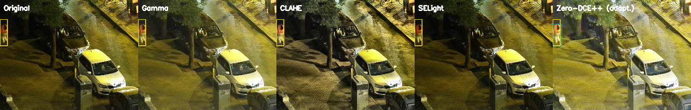
Lowest original F1; GT yellow, person predictions cyan at confidence 0.25.
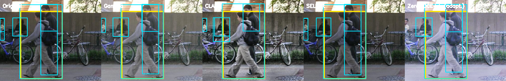
Largest Zero-DCE++ minus original F1 (may still be nonpositive); GT yellow, person predictions cyan at confidence 0.25.
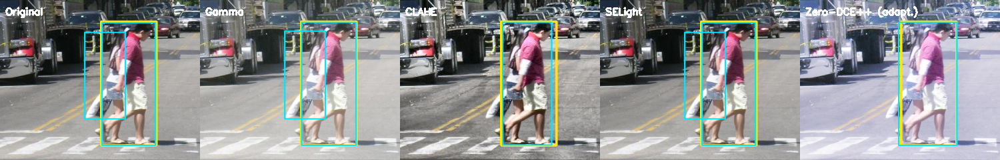